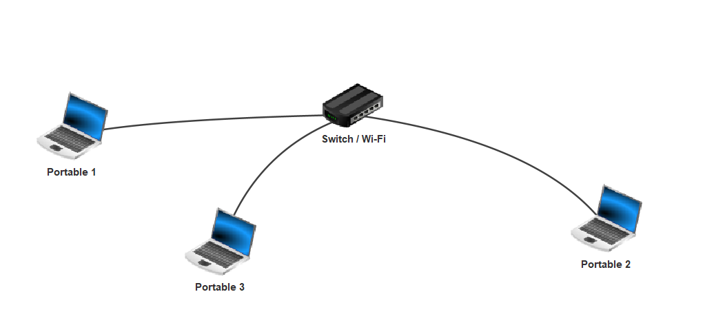

Internet
ü§î Introduction
Internet fait aujourd’hui partie de notre quotidien : on l’utilise pour envoyer des messages, regarder des vidéos, jouer en ligne, faire des recherches… Mais comment ça fonctionne vraiment ?
Dans cette leçon, nous allons répondre à cette question en découvrant comment les machines communiquent entre elles, quels sont les composants d’un réseau et comment les informations circulent sur Internet.
⌛ Point historique

Définitions
Définition : réseau
Ensemble de machines reliées entre elles de telle sorte qu’elles puissent communiquer entre elles.
Types de réseaux
On distingue plusieurs types de réseaux, dont le réseau local.
Définition : réseau local
Un réseau où les machines peuvent communiquer directement entre elles sans passer par d’autres réseaux.
Exemple : un réseau domestique

Définition : Internet
Internet est un réseau de réseaux.
üß© Composants d‚Äôun r√©seau
Voici un tableau récapitulatif des éléments que l’on peut croiser dans un réseau :
| Élément | Rôle | Exemple |
|---|---|---|
| Machines | Élément qui cherche à communiquer, envoyer ou recevoir des données | Ordinateurs, tablettes, consoles, smartphones |
| Switch | Élément qui relie localement des machines | Box Internet, switch RJ45 |
| Routeur | Élément qui permet de relier un réseau local à Internet ou à d’autres réseaux | Box Internet, routeur spécifique |
| Câbles, ondes | Élément qui permet de relier les machines au switch ou au routeur | Câble Ethernet, fibre optique, Wi‑Fi |
üÜî Identifiants des machines sur un r√©seau
Premier niveau : l’adresse MAC
Chaque machine dispose d’une ou plusieurs cartes réseau. Ces cartes permettent de communiquer localement ou globalement.
Chaque carte possède un identifiant unique appelé adresse MAC (Media Access Control).
Une adresse MAC est composée de 6 blocs de 2 caractères hexadécimaux.  
Exemple :
La base hexadécimale
La base hexadécimale correspond à une représentation des nombres utilisant 16 symboles. Les caractères vont de 0 à F (F représentant 15 en base décimale).
| nombre hexadécimal | 0 | ... | 9 | A | B | C | D | E | F |
|---|---|---|---|---|---|---|---|---|---|
| nombre décimal | 0 | ... | 9 | 10 | 11 | 12 | 13 | 14 | 15 |
Second niveau : l’adresse IP
L’adresse MAC permet d’identifier précisément une machine, mais ne donne aucune information sur son emplacement dans un réseau. Il existe donc une seconde adresse attribuée à chaque machine : l’adresse IP.
L’adresse IP est attribuée aux machines présentes sur un réseau afin qu’elles puissent être identifiées de manière plus globale.
Elle est composée de deux parties :
- La partie réseau : elle permet d’identifier un réseau sur Internet.
- La partie machine : elle permet d’identifier une machine sur ce réseau.
Une adresse IP (IPv4) est composée de 4 nombres allant de 0 à 255, représentant chacun 8 bits, et peut être écrite sous forme décimale ou binaire.
Exemple :
Sous forme décimale :
Sous forme binaire :
La base binaire
La base binaire correspond à une représentation des nombres utilisant uniquement deux symboles : 0 et 1.
| nombre décimal | 0 | 1 | 2 | 3 | 4 | 5 | 6 | 7 | 8 |
|---|---|---|---|---|---|---|---|---|---|
| nombre binaire | 0 | 1 | 10 | 11 | 100 | 101 | 110 | 111 | 1000 |
Afin de délimiter la partie réseau de la partie machine, on utilise un masque de sous‑réseau.
Exemple :
On dispose de l’adresse 128.40.94.3 avec un masque de 16 bits (c’est‑à‑dire que les 16 premiers bits de l’adresse correspondent à la partie réseau et le reste à la partie machine).
Cela correspond en binaire à :
Le masque de sous‑réseau étant de 16 bits, il faut donc découper l’adresse IP au 16ᵉ bit.
Si maintenant on applique le masque de sous‑réseau à l’adresse IP :
Donc la partie réseau de cette adresse est 128.40.0.0.
üîÅ √âchange d‚Äôinformations
Maintenant que nous savons comment les machines s’identifient entre elles, intéressons‑nous à la manière dont elles échangent des informations.
Définition : protocole
Un protocole informatique est un ensemble de règles qui régissent les échanges entre machines.
Définition : protocole TCP/IP
Le protocole TCP/IP permet la communication et l’échange de données sur Internet entre une machine émettrice et une machine réceptrice.
Ce protocole est composé de deux sous‑protocoles :
- Le protocole TCP permet le contrôle et la fiabilité de l’envoi des paquets. Il permet de s’assurer qu’un paquet est bien arrivé à destination à l’aide d’accusés de réception.
- Le protocole IP permet d’identifier quelles machines, sur quels réseaux, communiquent entre elles à l’aide de leur adresse IP.
Fonctionnement du protocole
Le protocole TCP/IP fonctionne en plusieurs étapes :
- Les données à échanger sont découpées en plusieurs paquets (séquences de 0 et de 1) de taille définie et numérotés.
- Les paquets transitent du point de départ jusqu’à la machine de destination.
- Tous les paquets sont reconstruits à l’aide de leur numérotation.
- Un contrôle d’intégrité est effectué par la machine réceptrice pour s’assurer que les données sont complètes et correctes. Si ce n’est pas le cas, la machine demande la retransmission des paquets défectueux.